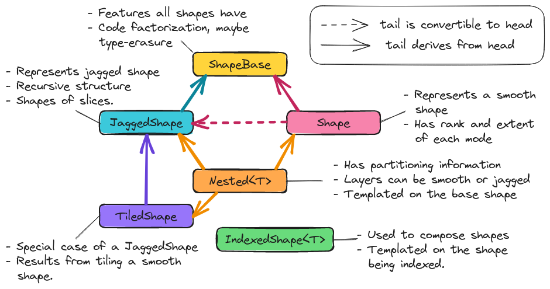

Shape V1 Design
In designing the class hierarchy we note the following:
An algorithm which works for a jagged shape should work for a smooth shape as well. The reverse, smooth algorithms with jagged shapes, will in general not work.
Nestings are logically imposed over an existing shape. The resulting nested shape is still an instance of the underlying shape.
Tiled shapes are a subcategory of jagged shapes.

Fig. 19 The architecture of TensorWrapper’s Shape component.
Hi there
Fig. 19 shows the classes primarily responsible for
implementing the shape component. Most end users will deal with the Shape
class.
ShapeBase
The unifying features of all shapes were summarized in the
Basic operations consideration. ShapeBase provides the API
that all shapes must minimally satisfy because they are shapes. The actual
class serves primarily as code factorization.
Shape
The Shape class describes a (smooth) hyper-rectangular array of data and
can be used for “traditional” tensors (those which are not nested or jagged).
Most end users will simply create Shape objects and pass them on to
TensorWrapper. We expect that manipulations of Shape objects will be
aimed at TensorWrapper developers.
JaggedShape
To satisfy the Jagged-ness consideration we introduce JaggedShape.
JaggedShape is similar to Shape except that users must explicitly
provide the shape of the slices. Generally speaking JaggedShape objects of
rank \(r\) will contain a series of rank \(s\) Shape objects. The
actual JaggedShape object serves as a map from an index with \((r-s)\)
indices to the Shape of that slice. Like Shape we expect users to
primarily be concerned with construction. Again, manipulations of the
JaggedShape will be primarily of interest to TensorWrapper developers.
TiledShape
Introduced primarily as a convenience for constructing JaggedShape objects
by tiling.
Nested
To address the Nested consideration, we have added a Nested<T>
class which is templated on the type of the tensor’s overall shape.
With objects like Shape and JaggedShape, TensorWrapper can’t tell how
the user is thinking of the tensor. For example, they could be thinking of a
matrix as a matrix or as a vector of vectors. The point of the Nested<T>
object is to partition the ranks of the tensor into layers, so we know how many
layers the user is viewing the tensor as, and how many ranks each layer has.
Mathematically the various ways of a viewing a tensor do not change the
properties of the tensor; however, when we are physically laying the tensor out
on the computer, how we view the tensor can affect physical layout.
IndexedShape
Consideration Combining shapes requires us to be able to compose
the various shape objects. To do this, we rely on the same mechanism used for
TensorWrapper, i.e., an expression layer. More specifically,
IndexedShape objects result from indexing a shape like s("i,j,k"). While
IndexedShape is technically exposed to the user, user can be somewhat
oblivious to its existence.
Proposed Shape APIs
Constructing a Shape
Creating a non-nested shape just requires knowing the extent of each mode:
Shape null_shape; // No rank and no elements
Shape rank0_shape{}; // A scalar
Shape rank1_shape{10}; // 10 element vector
Shape rank2_shape{10, 20}; // 10 by 20 matrix
Shape rank3_shape{10, 20, 30}; // 10 by 20 by 30 tensor
Note that following usual C++ rules the first two lines actually call different constructors (default ctor vs. initializer list). Using an initializer list requires us to know the rank at compile time. If we want to determine the rank at runtime we can use iterators:
// Somehow create a vector of extents
using size_type = Shape::size_type;
std::vector<size_type> extents = get_extents();
// Construct Shape from iterator pair
Shape runtime_rank_shape(extents.begin(), extents.end());
Jagged Shape Construction
For a Shape we need to specify the extents of each mode. JaggedShape
declaration is done in terms of Shape objects and looks like:
// For brevity define variables
Shape s10{10}, s20{20}, s30{30};
Shape s10_20{10, 20}, s30_40{30, 40}, s50_60{50, 60};
Shape s10_20_30{10, 20, 30}, s40_50_60{40, 50, 60};
// No elements, no rank
JaggedShape null_shape;
// Smooth scalar viewed as a JaggedShape (note () not {})
JaggedShape smooth0_shape(Shape{});
// Smooth vector viewed as a JaggedShape (note () not {})
JaggedShape smooth1_shape(Shape{10});
// Smooth matrix viewed as a JaggedShape (note () not {})
JaggedShape smooth2_shape(Shape{10, 20});
// A "jagged" vector with no elements
JaggedShape rank0_shape{};
// A jagged matrix with 1 row, note the {}
JaggedShape rank2_shape{s10};
// A jagged matrix with 3 rows; row 0 has 10 elements, row 1 has 20, row 2 30
JaggedShape rank2_shape2{s10, s20, s30};
// A jagged rank 3 tensor with smooth matrices. Matrix 0 is 10 by 20,
// matrix 1 is 30 by 40, and matrix 2 is 50 by 60
JaggedShape rank3_shape{s10_20, s30_40, s50_60};
// A jagged rank 3 tensor where elements are jagged matrices. Matrix 0 is
// 1 by 10, matrix 2 has 20 columns in row 0 and 30 columns in row 2, and
// matrix 3 has 30 columns in row 0, 10 columns in row 1, and 20 columns in
// row 2
JaggedShape rank3_shape2{{s10},
{s20, s30},
{s30, s10, s20}};
// A jagged rank 4 tensor where the 0-th element of the 0-th mode is a
// 10 by 20 by 30 smooth tensor and the 1-st element is a 40 by 50 by 60
// smooth tensor
JaggedShape rank4_shape{s10_20_30, s40_50_60};
// A jagged rank 4 tensor where the elements are jagged rank 3 tensors.
// Taking slices along the 0 and 1-st modes, the (0,0)-th slice is a 10 by 20
// matrix, the (0,1)-th slice is a 30 by 40 matrix, the (1,0)-th slice is
// a 30 by 40 matrix, the (1,1)-th slice is a 10 by 20 matrix, and the
// (1,2)-th slice is a 50 by 60 matrix
JaggedShape rank4_shape2{{s10_20, s30_40},
{s30_40, s10_20, s50_60}};
// A jagged rank 4 tensors where the elements are jagged rank 3 tensors,
// which have jagged matrices for elements. Taking slices along the 0, 1, and
// 2 modes we have:
// - (0,0,0) is a 10 element vector,
// - (0,1,0) is a 20 element vector,
// - (0,1,1) is a 30 element vector,
// - (1,0,0) is a 10 element vector,
// - (1,0,1) is a 30 element vector,
// - (1,1,0) is a 20 element vector,
// - (1,2,0) is a 10 element vector,
// - (1,2,1) is a 20 element vector,
// - (1,2,2) is a 30 element vector
JaggedShape rank4_shape{{{s10}, {s20, s30}},
{{s10, s30}, {s20}, {s10, s20, s30}}};
Consider the shape of the (0,1) slice of rank4_shape. This slice is a
vector of vectors where the outer vector has two elements, element 0 of the
outer vector is a 10-element vector and element 1 is a 30-element vector. In
other words the shape of the (0,1) slice of rank4_shape describes a jagged
matrix, which could have been initialized by JaggedShape{s20, s30}. In turn
the above construction of rank4_shape is actually equivalent to:
JaggedShape e00{s10};
JaggedShape e01{s20, s30};
JaggedShape e10{s10, s30};
JaggedShape e11{s20};
JaggedShape e12{s10, s20, s30};
JaggedShape e0{e00, e01};
JaggedShape e1{e10, e11, e12};
JaggedShape rank4_shape{e0, e1};
And we see that JaggedShape is a recursive structure and thus the runtime
mechanism for initializing a JaggedShape is with iterators running over
JaggedShape objects:
std::vector<JaggedShape> slice_shapes = get_slices();
JaggedShape shape(slice_shapes.begin(), slice_shapes.end());
So far we have focused on the most general way to create a JaggedShape one
of the most common ways to form a JaggedShape is by tiling. Consider a
30 by 30 matrix where we tile each mode into 5, 15, and 10 element chunks.
Using JaggedShape this can be done by:
JaggedShape js{{Shape{5,5}, Shape{5, 15}, Shape{5,10}},
{Shape{15,5}, Shape{15,15}, Shape{15,10}},
{Shape{10,5}, Shape{10,15}, Shape{10,10}}};
This is an admittedly verbose declaration. Thus for the special case of crating
JaggedShape objects which result from tiling smooth Shape objects we
introduce the TiledShape class. Using TiledShape the same shape could
be declared via:
TiledShape s{{5, 10, 15}, {5, 10, 15}};
Constructing Nested Shapes
Creating a Nested<T> object requires knowing the shape of the tensor and how
the indices are partitioned into layers.
// Zero layer scalar
Nested<Shape> s({}, Shape{});
// One layer scalar
Nested<Shape> s0({0}, Shape{});
// Two layer scalar
Nested<Shape> s0_0({0, 0}, Shape{});
// One layer vector
Nested<Shape> s1({1}, Shape{10});
// Two layer vector (mode in layer 0)
Nested<Shape> s1_0({1, 0}, Shape{10});
// Two layer vector (mode in layer 1)
Nested<Shape> s0_1({0, 1}, Shape{10});
// One layer matrix
Nested<Shape> s1({2}, Shape{10, 20});
// Two layer matrix (both modes in layer 0)
Nested<Shape> s2_0({2, 0}, Shape{10, 20});
// Two layer matrix (one mode per layer)
Nested<Shape> s1_1({1, 1}, Shape{10, 20});
// Two layer matrix (both modes in layer 1)
Nested<Shape> s0_2({0, 2}, Shape{10, 20});
// One layer rank 3
Nested<Shape> s3({3}, Shape{10, 20, 30});
// Two layer rank 3 one mode in layer 0 two in layer 1
Nested<Shape> s1_2({1, 2}, Shape{10, 20, 30});
// Three layer rank 3, one mode per layer
Nested<Shape> s1_1_1({1, 1, 1}, Shape{10, 20, 30});
// A two-layer shape where modes 0 and 1 are in layer 0 and modes 2 and 3
// are layer 1
Nested<Shape> s({2, 2}, Shape{5, 10, 15, 20});
The general syntax for an \(n\) layer tensor is an \(n\) element container where the \(i\)-th element is the number of ranks in that layer (ranks from the shape object are assigned to layers left to right; so permutations may be needed to line up with layering).
Basic Operations
All shapes know their total rank and the total number of scalar elements:
Shape s{10, 20, 30};
JaggedShape js{s, Shape{10, 20}};
// Total rank of the tensor
assert(s.rank() == 3);
assert(js.rank() == 3);
// Total number of elements in the tensor
assert(s.size() == 6000); // 10 * 20 * 30 = 6000
assert(js.size() == 6200); // 6000 + (10*20) = 6200;
Nested additionally allows you to get this information per layer:
Nested<Shape> s1_2({1, 2}, s);
Nested<JaggedShape> js1_2({1, 2}, js);
assert(s1_2.n_layers() == 2);
assert(js1_2.n_layers() == 2);
assert(s1_2.rank_layer(0) == 1);
assert(s1_2.rank_layer(1) == 2);
assert(js1_2.rank_layer(0) == 1);
assert(js1_2.rank_layer(1) == 2);
assert(s1_2.elements_in_layer(0) == 10);
assert(s1_2.elements_in_layer(1) == 6000);
assert(js1_2.elements_in_layer(0) == 2);
assert(js1_2.elements_in_layer(1) == 6200);
// Get the shape of the 0,0-th element (returns a std::variant)
assert(s3_3({0, 0}) == s);
Shape Composition
Shape and JaggedShape objects are composed similarly (with
JaggedShape objects having many more checks to ensure slices are of
compatible sizes).
Shape s0{10, 20, 30}, s1;
JaggedShape js0{Shape{10}, Shape{20}}, js1;
// Since addition, subtraction, and element-wise multiplication only work out
// the shape of the result, they often amount to copying the state on the
// right side of the assignment operator (possibly with a permutation)
s1("i,j,k") = s0("i,j,k") + s0("i,j,k");
assert(s1 == s0);
js1("i,j") = js0("i,j") + js0("i,j");
assert(js1 == js0);
// Permuting modes
s1("j,i,k") = s0("i,j,k") + s0("i,j,k");
assert(s1 == Shape{20,10,30});
js1("j,i") = js0("i,j") + js0("i,j");
assert(js1 == JaggedShape{Shape{20}, Shape{10}});
// Contraction
s1("i,k") = s0("i,j,k") * s0("i,j,k");
assert(s1 == Shape{10, 30});
// js0 is a jagged matrix with 2 rows, contracting over the variable number
// of columns gives a 2 by 2 matrix (represented as jagged matrix even though
// it's smooth)
js1("i,k") = js0("i,j") * js0("k,j");
assert(js1 == JaggedShape{Shape{2}, Shape{2}});
// These would throw since contracted modes aren't the same length
// s1("i,k") = s0("j,i,k") * s0("i,j,k");
// js1("i,k") = js0("i,j") * js0("j,k");
// Direct product
s1("i,j,k,l") = s0("i,j,k") * s0("i,j,l");
assert(s1 == Shape{10, 20, 30, 30});
js1("i,j,k") = js0("i,j") * js0("i,k");
assert(js1 == JaggedShape{Shape{10,10}, Shape{20,20}});
Combining Nested<T> objects is conceptually done layer-by-layer. In practice
we just combine the underlying T objects while preserving the layer
assignments and ensuring layer shapes are compatible:
Shape s{10, 20, 30};
Nested<Shape> s1_2({1, 2}, s), s2_1({2,1}, s), result;
result("i,j,k") = s1_2("i,j,k") + s1_2("i,j,k");
assert(result == s1_2);
// Not allowed because we can't add rank 1 tensors to rank 2 tensors
// result("i,j,k") = s1_2("i,j,k") + s2_1("i,j,k");
result("i,j") = s1_2("i,j,k") * s1_2("i,j,k");
assert(result == Nested<Shape>({1, 1}, Shape{10, 20}));
result("j,k") = s1_2("i,j,k") * s1_2("i,j,k");
assert(result == Nested<Shape>({0,2}, Shape{20, 30}));
// Layers only need compatible, not identical, shapes
result("j,k") = s1_2("i,j,k") * s2_1("i,j,k");
assert(result == Nested<Shape>({1, 1}, Shape{20, 30}));
We note that it’s quite likely that scenarios will arise where the user will want the result to be layered different than the default behavior provides. In practice re-layering a shape is a trivial operation (swapping two small vectors of integers).
Slicing and Chipping
Slices of a shape have the same rank, chips have different ranks:
Shape s{10, 20};
// Get the shape of row 0 as a matrix
auto s0 = s.slice(0);
assert(s0 == Shape{1, 20});
// Get the shape of column 0 as a matrix
auto sx0 = s.slice({0, 0}, {10, 1});
assert(sx0 == Shape{10, 1});
// Get the shape of the first five columns of the first five rows...
auto s05_05 = s.slice({0,0}, {5,5});
assert(s05_05 == Shape{5, 5});
// Note that this shape still refers to a rank 2 tensor even though the
// first mode has a single element
auto s01_05 = s.slice({0, 0}, {1, 5});
assert(s01_05 == Shape{1, 5});
// Get the shape of row 2 as a vector
auto s2 = s.chip(2);
assert(s2 == Shape{20});
// Get the shape of column 2 as a vector
auto sx2 = s.chip({0, 2}, {10, 3});
assert(sx2 == Shape{10});
For a rank \(r\) tensor, the general overload of slice and chip takes
two \(r\)-element vectors. The first vector is the first element in the
slice/chip and the second vector is the first element not in the slice/chip.
For convenience we also provide an overload where the user may provide up to
\(r\) integers. This overload pins the \(i\)-th mode to the \(i\)-th
integer all other modes run their entire span.
Slicing and chipping JaggedShape objects is largely the same:
JaggedShape js0{Shape{10}, Shape{20}};
auto j0 = js0.chip(0);
assert(j0 == JaggedShape{Shape10});
auto j1 = js0.slice(0);
assert(j1 == JaggedShape({Shape{10}});
Because chipping selects a single element per mode per layer, chipping a
Nested object is fairly straightforward:
Nested<Shape> s2_2({2, 2}, Shape{2, 2, 10, 10});
assert(s2_2.chip(0) == Nested<Shape>({1, 2}, Shape{2, 10, 10}));
assert(s2_2.chip(1,2) == Shape{10, 10});
assert(s2_2.chip(1,2,3) == Shape{10});e
assert(s2_2.chip(1,2,3,4) == Shape{});
Taking arbitrary slices of a Nested<T> object is significantly more
complicated on account of the fact that slice requests for any of the inner
layers will in general be slicing multiple tensors simultaneously. For example
consider s2_2 from the previous code snippet. Slicing layer 0 is
straightforward, asking for say {1,0}, {2,2} selects row 1 of the outer
matrix. Generalizing, something like {1,0,5,5}, {2,2,10,10} would grab
row 1 of layer 0, and rows 5 through 9 (inclusive) for each inner matrix. What
if we wanted the first 5 rows of outer element {1,0} and the last 3 rows
of outer element {1,1}? This request requires more than just a block range,
it requires a JaggedShape. The above request can be requested by:
// The shape resulting from taking the first 5 rows of a 10 by 10 matrix
Shape e10({5,10}, {0,0});
// The shape resulting from taking the last 5 rows from a 10 by 10 matrix
Shape e11({3,10}, {7,0});
// A 1 row matrix with 2 columns whose elements are a 5 by 10 and a
// 3 by 10 matrix, the origin of the outer tensor is {1,0}
JaggedShape slice({{e10, e11}}, {1,0});
auto requested_slice = s2_2.slice(slice);
assert(requested_slice == slice);
As this also shows, requesting such slices also completely negates the point of
the slice member because the input is the result. As a result, we have not
designed such an API. Instead the slicing APIs for a Nested object are:
Nested<Shape> s2_2({2, 2}, Shape{2, 2, 10, 10});
Shape s01({1, 1, 10, 10}, {0, 1, 0, 0});
// Grabs the 0,1 element of the outer matrix preserving the rank
assert(s2_2.slice(0, 1) == Nested<Shape>({2, 2}, s01));
// Grabs the bottom row of the outer matrix, and the bottom 5 rows of
// the inner matrices
Nested<Shape> s1050({1, 2, 5, 5}, {1, 0, 5, 0});
s2_2.slice({1, 0, 5, 0}, {2, 2, 10, 10});
Ultimately, bear in mind, chipping and slicing are little more than convenience functions for working out the shapes resulting from slicing/chipping the tensor; for complicated selections it should always be possible to build the resulting shape manually.
Iterating
By default the origin of a freshly constructed shape is the zero vector. For slices and chips, the origin is the first element in the slice or chip (note that in the previous section we conveniently chose our slices/chips so the origin was the zero vector). By default, when iterating over a shape indices are returned as offsets from the origin, in lexicographical order. For example:
auto print_shape = [](auto&& s){
for(const auto& index : s)
std::cout << "{" << index[0] << "," << index[1] << "} ";
};
Shape s{2, 3};
print_shape(s); // prints {0,0} {0,1} {0,2} {1,0} {1,1} {1,2}
auto s01_13 = s.slice({0, 1}, {1, 3});
print_shape(s01_13); // prints {0,1}, {0,2} NOT {0,0} {0,1}
// If we wanted {0,0} {0,1}
print_shape(s01_13.offsets());
// We can move the origin
s.set_origin({10, 10});
print_shape(s); // prints {10,10} {10,11} {10,12} {11,10} {11,11} {11,12}
For completeness we define overloads of Shape and JaggedShape which
also take an origin. For JaggedShape the origin needs to be specified for
the internal shapes and the explicitly unrolled ranks.
// Makes a shape for a 2 by 3 matrix whose first element is {10, 10}
Shape s({2, 3}, {10, 10});
// Outer vector starts at 10, element 11 of the outer vector starts at 5,
// element 12 of the outer vector starts at 6
JaggedShape js({{Shape({10}, {5}), Shape({20}, {6})}, {10});
// Outer vector starts at 10, inner vectors start at 10.
Nested<Shape> s1_1({1, 1}, s);
Summary
The design of the shape component satisfies the considerations raised above by:
- Basic operations
The
ShapeBaseclass will provide a common API for getting/setting basic information and performing common operations.- Nested
The
Nestedclass tracks how the modes of a tensor are layered.- Jagged-ness
The
JaggedShapeclass is used to represent jagged shapes.- Combining shapes
The
IndexedShapeclass allows us to easily compose shapes.- Iterable
The various classes define iterators which allow users to iterate over the indices contained in the shape.
Additional Notes
Slicing and chipping assume contiguous sub-tensors. For grabbing noncontiguous sub-blocks and using them as if they were contiguous, one needs a mask.